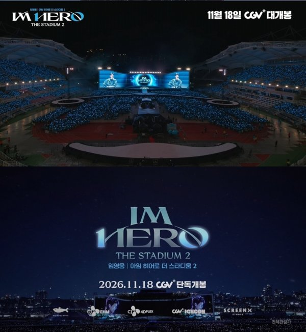
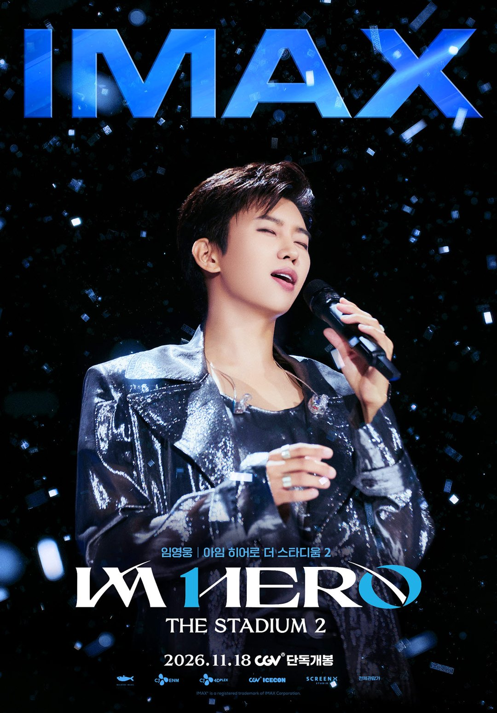
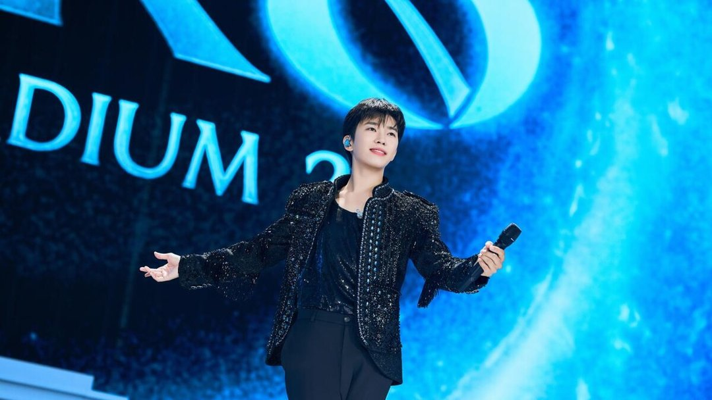

스타디움 공연을 극장 스크린으로 다시 보는 날이 정해졌어요. 임영웅의 콘서트 실황 영화 '임영웅│아임 히어로 더 스타디움 2'가 11월 18일 개봉해요. 이번에는 볼 수 있는 관이 세 가지로 늘었어요.
📷 사진 1 자리
▲ '임영웅│아임 히어로 더 스타디움 2' 개봉 포스터 · 사진=물고기뮤직 제공
11월 18일, 전국 CGV에서
개봉일은 11월 18일이고 전국 CGV에서 단독으로 상영해요. 공식 포스터에도 'CGV 단독개봉'이 적혀 있어요. 다른 멀티플렉스에서 찾으면 안 나오니 예매할 때 참고하세요.
처음 알려진 상영 방식은 일반 2D와 스크린X였어요. 여기에 아이맥스 상영이 더해지면서 아이맥스 전용 포스터도 따로 공개됐어요.
📷 사진 2 자리
▲ 새로 공개된 아이맥스 포스터 · 사진=물고기뮤직 제공
2D, 스크린X, 아이맥스 중 어디로
스크린X는 정면 스크린 양옆 벽까지 영상이 이어지는 방식이고, 아이맥스는 더 큰 화면과 전용 음향 시스템을 쓰는 상영관이에요. 일반 2D는 가까운 극장에서 편하게 볼 수 있다는 게 장점이죠.
고를 때는 영화에 담긴 장면을 기준으로 삼으면 쉬워요. 배급사가 소개한 볼거리는 밴드 라이브 사운드, 대규모 안무, 밤하늘의 드론쇼와 불꽃놀이예요. 소리를 크게 느끼고 싶다면 아이맥스, 스타디움을 둘러싼 풍경을 넓게 보고 싶다면 스크린X가 맞아요.
📷 사진 3 자리
▲ '아임 히어로 더 스타디움 2' 속 임영웅의 무대 · 사진=CJ 4DPLEX 제공
영웅시대와 함께한 10년
영화는 팬덤 영웅시대와 걸어온 10년을 정리하는 공연을 담았어요. 앞서 공개된 메인 예고편에는 앞으로의 10년도 함께하자는 메시지가 들어갔어요. 무대 위 노래뿐 아니라 팬과 나눈 이야기가 영화의 한 축이라는 뜻이에요.
임영웅의 무대 의상은 요즘 다른 작품에서도 이름이 나왔어요. 디즈니+ '재혼 황후'에서 왕자 하인리를 맡은 이종석이 임영웅 콘서트 의상을 참고해 하인리 의상을 따로 만들었다고 밝혔거든요. 그 의상 이야기가 궁금했다면 큰 화면에서 무대 의상을 살펴보는 것도 또 하나의 볼거리예요.
정리하면서 눈에 띈 건 개봉을 앞두고 상영 방식이 하나 더 늘었다는 점이에요. 같은 공연이라도 어느 관에서 보느냐에 따라 드론쇼의 크기와 밴드 사운드가 다르게 다가올 테니, 이번 영화는 관 고르기가 꽤 중요한 결정이에요. 현장에 못 갔던 분이라면 2D보다 특수관부터 알아보길 권해요.
✍️ 직접 보거나 들은 경험이 있으면 위 문단에 한두 줄 덧붙이세요 (이 안내 줄은 지우기)
'아임 히어로 더 스타디움 2'는 11월 18일 전국 CGV에서 2D, 스크린X, 아이맥스로 개봉해요. 아이맥스 상영관 위치는 CGV 앱에서 확인할 수 있어요.


